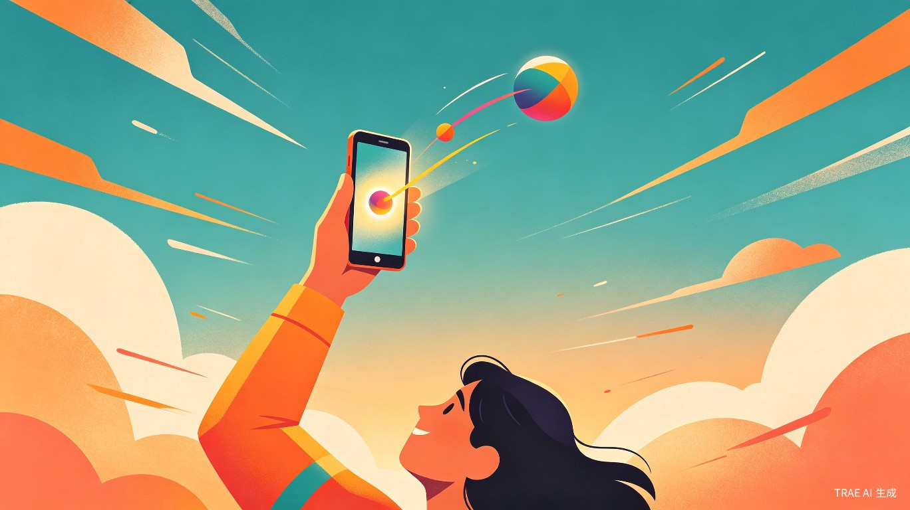
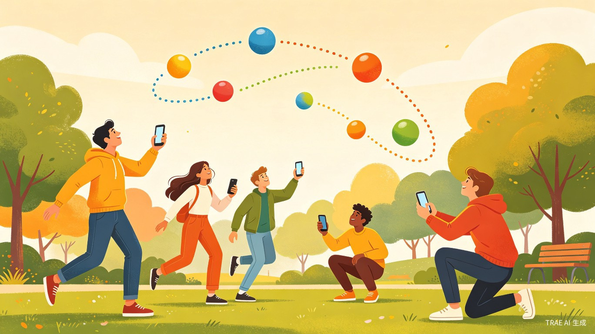
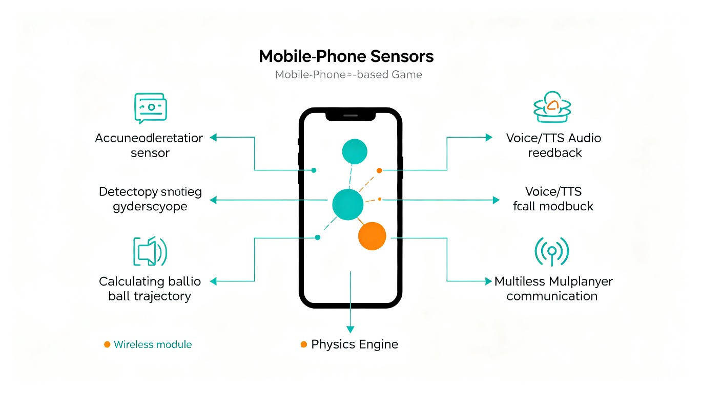

一、项目概述
「弹球大作战」是一款基于手机传感器的体感弹球游戏。玩家将手机当作"球拍"，用力上举模拟弹球动作，虚拟球被弹入高空后沿抛物线轨迹下落。App 通过语音和屏幕提示球的高度、速度和落点方位，玩家需要移动身体、端着手机去"接"球并再次弹起，目标是追求弹球次数最多和空中停留时间最长。
这个创意的核心出发点很简单：让用户不再一直盯着屏幕，而是动起来。传统手游让人久坐不动，而弹球大作战把手机从"低头看"变成"举起来、跑起来"，让数字娱乐和身体运动合二为一。

二、痛点与动机
2.1 现状问题
智能手机普及后，人们的日均屏幕使用时间已超过 5 小时，其中游戏娱乐占据大量时长。传统手游的交互方式几乎完全依赖触屏点击和滑动，用户长时间保持低头、静坐的姿势，带来颈椎疲劳、视力下降、运动不足等健康问题。
虽然市面上已经出现了一些利用手机传感器的体感游戏（如空气网球、体感切水果、Motion Shot Basketball 等）[1][2]，但它们大多停留在"单次动作触发"的层面——挥一下手机等于切一个水果或投一次篮，动作和反馈之间缺乏持续的物理闭环，玩家的身体运动幅度有限，社交互动也几乎为零。
2.2 我们的解法
弹球大作战在三个维度上做出了差异化：
- 持续物理闭环：弹球→飞升→追踪轨迹→语音提示→移动接球→再次弹起，形成完整的动作循环，而非单次触发
- 全身运动：玩家需要根据球落点的方位提示，在真实空间中移动身体去接球，运动强度从手腕扩展到全身
- 多人实时互动：支持区域内多人同时参与，可以合作接球、接力弹球，把数字游戏变成线下社交活动
三、核心玩法
3.1 单人模式
游戏开始后，玩家双手握紧手机，用力向上举起。手机内置的加速度传感器和陀螺仪检测到上举动作的速度和角度，据此计算虚拟球的初始弹射参数。球被"弹"入高空后，App 实时模拟球的抛物线运动轨迹。
当球到达最高点开始下落时，App 通过以下方式引导玩家：
- 语音播报："球在你的左前方 2 米处，高度 1.5 米，速度正在加快，快去接！"
- 屏幕指示：在简洁的界面上用箭头和距离数值显示球的方位
- 震动反馈：球即将落地时手机震动提醒
玩家听到提示后，需要移动到对应位置，在球"到达"的瞬间再次用力上举手机完成接球并弹起。如果时机和位置判断正确，球被成功接住并再次弹飞；如果球"落地"了，会扣分，但球会在地面弹起一次，玩家仍有机会抢救。
3.2 多人模式
在 Wi-Fi 或蓝牙连接的区域内，多名玩家可以加入同一局游戏。球被弹飞后，系统会随机或轮流指定接球人，被指定的玩家会收到专属语音提示。玩家之间也可以选择"自由接球"模式——谁先接到算谁的，增加竞技趣味。
多人模式还支持"接力弹球"玩法：A 弹球、B 接球、C 再接，看一个球在团队手中能传递多少次不落地，强调协作和默契。
3.3 计分规则
球落地后会弹起一次（模拟地面反弹），玩家可以在反弹瞬间冲过去接住，避免游戏结束。但如果反弹球也没接到，游戏停止，记录最终成绩。这个设计降低了挫败感，让新手也能享受完整体验。
四、技术方案
4.1 系统架构
整个应用的技术栈围绕手机传感器和物理模拟引擎构建，核心模块如下：

传感器采集层
调用手机加速度计和陀螺仪，以 50Hz 以上频率采集三轴加速度和角速度数据，用于检测弹球/接球动作和计算弹射参数。
动作识别引擎
对传感器数据进行实时分析，通过加速度峰值、方向向量和时间窗口匹配，区分"弹球上举"和"接球上举"两种动作。
物理模拟引擎
根据弹射初始速度和角度，在虚拟 3D 空间中模拟重力作用下的抛物线运动，实时计算球的位置、速度和预计落点。
反馈输出层
将球的运动状态转化为语音播报（TTS）、屏幕方位指示和触觉震动，让玩家"不看屏幕也能玩"。
4.2 关键技术难点与应对
| 技术难点 | 风险等级 | 应对方案 |
|---|---|---|
| 弹球动作与接球动作的区分 | 中 | 引入时间窗口机制：球在空中飞行期间，任何上举动作均判定为"接球"；球不在空中时，上举动作判定为"弹球"。配合力度阈值和持续时间双重校验。 |
| 传感器噪声与误触发 | 中 | 采用低通滤波平滑原始数据，设置最小加速度阈值（如 >15 m/s²）和最小持续时间（如 >200ms）来过滤日常晃动。 |
| 多人模式的位置估算 | 中高 | 初赛 Demo 采用"轮流接球"简化方案，无需精确定位；复赛迭代引入蓝牙信号强度（RSSI）粗估距离，配合玩家初始校准提升精度。 |
| 手机掉落安全风险 | 低 | 游戏启动时展示醒目安全提示，建议使用防摔手机壳或挂绳；检测到异常加速度模式（自由落体）时自动暂停游戏并发出警报。 |
4.3 开发工具与技术选型
本项目全程使用 TRAE Work 和 TRAE IDE 进行开发，具体技术选型如下：
| 模块 | 技术方案 | 说明 |
|---|---|---|
| 前端界面 | HTML5 + CSS3 + JavaScript | 使用 TRAE Work 快速搭建响应式 Web App，适配手机浏览器 |
| 传感器接口 | Generic Sensor API / DeviceMotion API | 浏览器原生支持的加速度计和陀螺仪访问接口 |
| 物理模拟 | 自定义 JavaScript 物理引擎 | 基于牛顿力学的轻量级抛物线计算，无需第三方物理库 |
| 语音反馈 | Web Speech API (SpeechSynthesis) | 浏览器原生 TTS 能力，实时播报球的方位和速度 |
| 多人通信 | WebRTC / WebSocket | 局域网内低延迟 P2P 通信，用于多人游戏状态同步 |
| AI 辅助开发 | TRAE Work / TRAE IDE | 利用 AI Agent 辅助代码生成、调试和迭代优化 |
五、用户体验设计
5.1 设计原则
- 不看屏幕也能玩：核心信息通过语音传达，屏幕仅作为辅助确认，让用户把注意力放在真实空间中的球上
- 三秒上手：打开 App 即显示"握紧手机，用力上举"的简单引导，无需教程
- 安全第一：每次启动游戏都有安全提示，检测到危险动作自动暂停
5.2 界面设计要点
游戏主界面采用极简设计，核心元素只有三个：
- 方位指示器：屏幕中央的圆形雷达图，用箭头指向球的相对方位，距离越近箭头越大
- 状态面板：顶部显示当前弹球次数、空中停留时间、总分
- 球的轨迹预览：用虚线弧线显示球的预计飞行路径，帮助玩家预判移动方向
5.3 声音设计
声音是本作最重要的反馈通道。语音播报的语气会随着游戏进程变化：球飞得高时语气兴奋（"漂亮！球飞到了 8 米！"），球快速下落时语气紧张（"快！球在你的右后方，马上落地！"），球落地时语气遗憾但鼓励（"没关系！球弹起来了，还有一次机会！"）。这种情绪化的语音反馈能极大增强沉浸感。
六、竞品分析与差异化
| 对比维度 | 空气网球 | 体感切水果 | Motion Shot Basketball | 弹球大作战 |
|---|---|---|---|---|
| 交互模式 | 单次挥拍触发 | 单次挥臂触发 | 单次投篮触发 | 弹-飞-接持续闭环 |
| 运动强度 | 轻度（手腕/手臂） | 轻度（手臂挥动） | 中度（手臂+上身） | 中度（全身移动） |
| 屏幕依赖 | 需要看屏幕 | 需要看屏幕 | 需要看屏幕 | 语音为主，可不看 |
| 社交性 | 单人 | 排行榜 | 排行榜 | 多人实时互动 |
| 物理模拟 | 简单碰撞 | 无 | 抛物线弹道 | 完整抛物线+落地反弹 |
| 运动类型 | 模拟网球 | 模拟切水果 | 模拟篮球 | 抽象弹球，更自由 |
从对比可以看出，弹球大作战在交互闭环完整性、运动强度、屏幕依赖度和社交互动四个维度上都具备明显的差异化优势。
七、商业潜力与社会价值
7.1 商业潜力
- 健康游戏赛道：全球健身游戏市场规模持续增长，体感+社交的组合在家庭娱乐和团建场景中有天然优势
- 低门槛高传播：无需额外硬件，一部手机就能玩，天然具备社交传播属性
- 变现路径清晰：基础模式免费 + 高级皮肤/道具付费 + 多人房间订阅 + 品牌联名活动
7.2 社会价值
- 促进运动：让"玩手机"和"做运动"不再对立，日均 15 分钟弹球游戏即可达到中等强度运动效果
- 亲子互动：家长和孩子可以一起在客厅弹球，用游戏替代刷手机
- 老年友好：大字体界面+语音引导的设计理念天然适合老年人，可作为轻度认知训练工具
- 无障碍设计：视觉障碍用户可以通过纯语音模式完整体验游戏
八、开发计划
按照大赛赛程节奏，制定以下分阶段开发计划：
-
第一阶段：报名期（6 月 16 日 - 7 月 15 日）完成创意提案提交；搭建项目框架，实现传感器数据采集和弹球动作检测的 MVP 原型。
-
第二阶段：初赛 Demo（7 月中旬前）完成单人模式核心闭环：弹球→物理模拟→语音提示→接球判定→计分系统。产出可体验的 Web Demo，录制演示视频。
-
第三阶段：复赛迭代（7 月下旬 - 8 月上旬）打磨 UI/UX，增加落地反弹机制、多种球类皮肤、成绩排行榜。启动多人模式开发（轮流接球方案）。
-
第四阶段：决赛打磨（8 月中旬）完成多人模式基础版本，优化传感器算法精度，准备路演材料和现场演示。
九、总结
「弹球大作战」的核心理念可以用一句话概括：把手机从低头看的屏幕，变成举起来玩的球拍。
这个创意站在了两个趋势的交汇点上：一是手机传感器技术的成熟让体感交互成为可能，二是人们对"放下手机、动起来"的健康生活方式有越来越强的需求。弹球大作战不是在屏幕内再造一个游戏世界，而是把游戏延伸到真实空间中，让数字和物理世界产生真实的连接。
技术上，传感器采集、物理模拟、语音反馈都是成熟可落地的方案，用 TRAE Work 和 TRAE IDE 可以高效完成从原型到产品的全过程。差异化的弹-飞-接闭环设计和多人互动模式，让这个作品在现有体感游戏市场中具备独特的竞争力。
世界很大，放手去造。我们准备好把这个几年前种下的想法，变成一个真正能让人动起来的游戏。